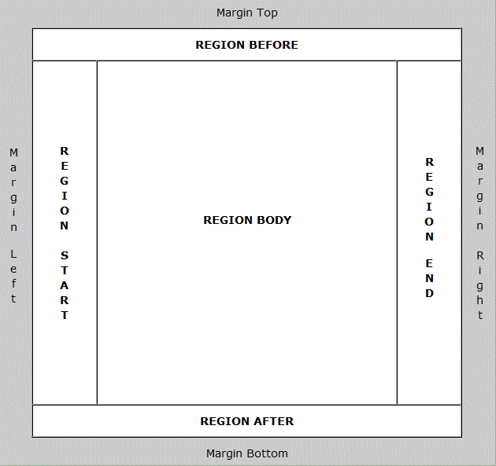
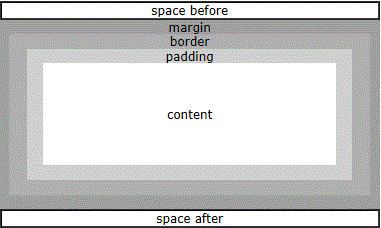

XSL-FO 指可扩展样式表语言格式化对象（Extensible Stylesheet Language Formatting Objects）。
XSL-FO 是用于格式化 XML 数据的语言
XSLFO 简介
XSL-FO 的简介。包括其概念和作用。
XSLFO 文档
本章将解 XSL-FO 文档的结构。
XSLFO 区域
本章讲解 XSL-FO 的区域模型（area model）。
XSLFO 输出
本章讲解 XSL-FO 文档的输出元素（Output Elements）。
XSLFO 流
本章讲解 XSL-FO 文档的输出流（Output Flow）。
XSLFO 页面
本章讲解 XSL-FO 如何定义页面的布局。
XSLFO 块
本章讲解 XSL-FO 输出块（output blocks）。
XSLFO 列表
本章讲解 XSL-FO 如何定义列表。
XSLFO 表格
本章讲解 XSL-FO 如何定义表格。
XSLFO & XSLT
本章讲解 XSL-FO 如何使用 XSLT。
XSLFO 软件
本章介绍了我们最喜欢的XSL-FO软件。
XSL-FO 对象参考手册
完整的 XSL-FO 对象列表，以及它们的属性。
XSL-FO 用于格式化供输出的 XML 数据。
在您学习 XSL-FO 之前，应当对 XML 和 XML 命名空间有基本的了解。
如果您希望首先学习这些项目，请阅读我们的 XML 教程。
XSL-FO 是一种基于 XML 的标记语言，用于描述向屏幕、纸或者其他媒介输出 XML 数据的格式化（信息）。
为什么会存在这样的混淆呢？XSL-FO 和 XSL 是一回事吗？
可以这么说，不过我们需要向您作一个解释：
样式化（Styling）是关于转换信息和格式化信息两方面。在万维网联盟（W3C）编写他们的首个 XSL 工作草案的时候，这个草案包括了有关转换和格式化 XML 文档的语言语法。
后来，W3C 工作组把这个原始的草案分为独立的标准：
本教程的其余内容均与格式化 XML 文档有关：XSL-FO，也被称为 XSL。
XSL-FO 在 2001 年 10 月 15 日 被确立为 W3C 推荐标准。通常被称为 XSL。
如需阅读更多有关 W3C 的 XSL 活动的内容，请阅读我们的 W3C 教程。
XSL-FO 文档是带有输出信息的 XML 文件。
XSL-FO 文档存储在以 .fo 或 .fob 为文件扩展名的文件中。您也可以把 XSL-FO 文档存储为以 .xml 为扩展名的文件，这样做的话可以使 XSL-FO 文档更易被 XML 编辑器存取。
XSL-FO 的文档结构如下所示：
<?xml version="1.0" encoding="ISO-8859-1"?>XSL-FO 文档属于 XML 文档，因此也需要以 XML 声明来起始：
<?xml version="1.0" encoding="ISO-8859-1"?><fo:root> 元素是 XSL-FO 文档的根元素。这个根元素也要声明 XSL-FO 的命名空间：
<fo:root xmlns:fo="http://www.w3.org/1999/XSL/Format"><fo:layout-master-set> 元素包含一个或多个页面模板：
<fo:layout-master-set>每个 <fo:simple-page-master> 元素包含一个单一的页面模板。每个模板必须有一个唯一的名称（master-name）：
<fo:simple-page-master master-name="A4">一个或多个 <fo:page-sequence> 元素可描述页面内容。master-reference 属性使用相同的名称来引用 simple-page-master 模板：
<fo:page-sequence master-reference="A4">注释：master-reference 的值 "A4" 实际上并没有描述某个预定义的页面格式。它仅仅是一个名称。您可以使用任何名称，比如 "MyPage"、"MyTemplate" 等等。
XSL-FO 使用矩形框（区域）来显示输出。
XSL 格式化模型定义了一系列的矩形区域（框）来显示输出。
所有的输出（文本、图片，等等）都会被格式化到这些框中，然后会被显示或打印到某个目标媒介。
让我们研究一下下面这些区域：
XSL-FO 输出会被格式化到页面中。打印输出通常会分为许多分割的页面。浏览器输出经常会成为一个长的页面。
XSL-FO Pages（页面）包含区（Region）。
每个 XSL-FO 页面均包含一系列的 Regions（区）：
XSL-FO Regions（区）包含块区域（Block Area）。
XSL-FO Block Areas（块区域）定义了小的块元素（通常由一个新行开始），比如段落、表格以及列表。
XSL-FO Block Areas（块区域）包含其他的块区域，不过大多数时候它们包含的是行区域（Line Area）。
XSL-FO Line Areas（行区域）定义了块区域内部的文本行。
XSL-FO Line Areas（行区域）包含行内区域（Inline Area）。
XSL-FO Inline Areas（行内区域）定义了行内部的文本（着重号、单字符、图像，等等）。
XSL-FO 在 <fo:flow> 元素内部定义输出。
内容"块"会"流"入"页面"中，然后输出到媒介。
XSL-FO 输出通常被嵌套在 <fo:block> 元素内，<fo:block> 嵌套于 <fo:flow> 元素内，<fo:flow> 嵌套于 <fo:page-sequence> 元素内：
<fo:page-sequence>现在让我们看一个真实的 XSL-FO 实例：
<?xml version="1.0" encoding="ISO-8859-1"?>以上代码的输出如下所示：
Hello RUNOOBXSL-FO 页面使用来自 <fo:flow> 元素的数据进行填充。
XSL-FO 使用 <fo:page-sequence> 元素来定义输出页面。
每个输出页面都会引用一个定义布局的 page master。
每个输出页面都有一个定义输出的 <fo:flow> 元素。
每个输出页面均会按序列（顺序）被打印或显示。
XSL-FO 页面使用来自 <fo:flow> 元素的内容进行填充。
<fo:flow> 元素包含所有被打印到页面的元素。
当页面被印满以后，相同的 page master 会被一遍又一遍地被使用，直到所有文本被打印为止。
<fo:flow> 元素有一个 "flow-name" 属性。
flow-name 属性的值定义 <fo:flow> 元素的内容会去往何处。
合法的值：
XSL-FO 使用名为 "Page Masters" 的页面模板来定义页面的布局。
XSL-FO 使用名为 "Page Masters" 的页面模板来定义页面的布局。每个模板必须拥有一个唯一的名称：
<fo:simple-page-master master-name="intro">在上面的实例中，三个 <fo:simple-page-master> 元素，定义了三个不同的模板。每个模板（page-master）都有不同的名称。
第一个模板名为 "intro"。它可作为介绍页面的模板使用。
第二个和第三个模板名为 "left" 和 "right"。它们可作为偶数和奇数页码的页面模板使用。
XSL-FO 使用下面的属性定义页面的尺寸：
XSL-FO 使用下面的属性定义页面的边距：
XSL-FO 使用下面的元素定义页面的区：
请注意，region-before、region-after、region-start 以及 region-end 是主体区的一部分。为了避免主体区的文本覆盖到这些区域的文本，主体区的边距至少要等于其他区的尺寸。

这是从某个 XSL-FO 文档中提取的一个片断：
<fo:simple-page-master master-name="A4" page-width="297mm"上面的代码定义了一个名称为 "A4" 的 "Simple Page Master Template"。
页面的宽度是 297 毫米，高度是 210 毫米。
页面的四个边距（上边距、下边距、左边距、右边距）均为 1 厘米。
主体的边距是 3 厘米（四个边都是）。
主体的 before、after、start 以及 end 区均为 2 厘米。
上面的实例中的主体的宽度可通过页面宽度减去左右边距以及 region-body 的边距来计算得出：
297mm - (2 x 1cm) - (2 x 3cm) = 297mm - 20mm - 60mm = 217mm
请注意，region（region-start 和 region-end）没有被计算进来。正如之前讲解过的，这些区（region）是主体的组成部分。
XSL-FO 的输出位于块区域中。
内容"块"会"流"入"页面"中，然后输出到媒介。
XSL-FO 输出通常被嵌套在 <fo:block> 元素内，<fo:block> 嵌套于 <fo:flow> 元素内，<fo:flow> 嵌套于 <fo:page-sequence> 元素内：
<fo:page-sequence>块是位于矩形框中的输出序列：
<fo:block border-width="1mm">由于块区域是矩形框，所以可共享许多公共的区域属性：

space before 和 space after 是块与块之间起分割作用的空白。
margin 是块外侧的空白区域。
border 是区域外部边缘的矩形。其四个边均可有不同的宽度。它也可被填充为不同的颜色和背景图像。
padding 是位于 border 与 content 区域之间的区域。
content 区域可包含实际的内容，比如文本、图片、图形等等。
边框样式属性：
边框颜色属性：
边框宽度属性：
块是可被单独样式化的输出序列：
<fo:block font-size="12pt" font-family="sans-serif">字体属性：
文本属性：
结果：
|
RUNOOB At RUNOOB you will find all the Web-building tutorials you need, from basic HTML and XHTML to advanced XML, XSL, Multimedia and WAP. |
请看上面的实例，如果要生成一个拥有许多标题和段落的文档，那么将会需要非常多的代码。
通常，XSL-FO 文档不会像我们刚才所做的那样对格式化信息和内容进行组合。
通过 XSLT 的些许帮助，我们就可以把格式化信息置入模板，然后编写出更纯净的内容。
您会在本教程后面的章节学习到如何使用 XSLT 模板来组合 XSL-FO。
XSL-FO 使用 <fo:list-block> 元素来定义列表。
有四种 XSL-FO 对象可用来创建列表：
一个 XSL-FO 列表实例:
<fo:list-block>上面代码的输出如下所示：
|
* Volvo * Saab |
XSL-FO 使用 <fo:table-and-caption> 元素来定义表格。
XSL-FO 表格模型与 HTML 表格模型不是完全不同的。
有九种 XSL-FO 对象可用来创建表格：
XSL-FO 使用 <fo:table-and-caption> 元素来定义表格。它包含一个 <fo:table> 以及一个可选的 <fo:caption> 元素。
<fo:table> 元素包含可选的 <fo:table-column> 元素，一个可选的 <fo:table-header> 元素，一个 <fo:table-body> 元素，一个可选的 <fo:table-footer> 元素。这些元素中的每一个都可能拥有一个或多个 <fo:table-row> 元素，而 <fo:table-row> 同时会带有一个或多个 <fo:table-cell> 元素：
<fo:table-and-caption>以上代码的输出如下所示：
| Car | Price |
|---|---|
| Volvo | $50000 |
| SAAB | $48000 |
XSL-FO 与 XSLT 可彼此互助。
结果：
|
RUNOOB At RUNOOB you will find all the Web-building tutorials you need, from basic HTML and XHTML to advanced XML, XSL, Multimedia and WAP. |
上面的实例来自于有关 XSL-FO 块区域的那一章节。
从文档移除 XSL-FO 信息：
<header>RUNOOB</header>添加 XSLT 转换：
<xsl:template match="header">产生的结果是相同的：
|
RUNOOB At RUNOOB you will find all the Web-building tutorials you need, from basic HTML and XHTML to advanced XML, XSL, Multimedia and WAP. |
XSL-FO 需要格式化软件来产生输出。
一个 XSL-FO 处理器是一个用于格式化输出 XSL 文档的软件程序。
大多数的 XSL-FO 处理器可以输出 HTML、PDF 文档和质量打印。
下面介绍一些知名的 XSL-FO 处理器。
Antenna House Formatter V5 是为 PDF 或打印格式化 XML 文档的软件程序。
StyleVision 基于您的设计自动生成一致性标准的 XSLT 和 XSL:FO 样式表，以及相应的 HTML、RTF、PDF、 Word 2007 输出，等等。
XSL-FO 格式化的一些产品！
将描述转换为呈现的过程被称为格式化（formatting）。
| 对象 | 描述 |
|---|---|
| basic-link | 代表一个链接的起始资源。 |
| bidi-override | 重写默认 Unicode BIDI 的方向。 |
| block | 定义一个输出块（比如段落和标题）。 |
| block-container | 定义一个块级的引用区域（reference-area）。 |
| character | 规定将被映射为供呈现的字形的字符。 |
| color-profile | 定义样式表的一个颜色配置文件。 |
| conditional-page-master-reference | 规定一个当所定义的条件成立时使用的 page-master。 |
| declarations | 组合一个样式表的全局声明。 |
| external-graphic | 用于图像数据位于 XML 结果树之外的某个图形。 |
| float | 通常用于在页面起始处的一个单独区域里定位图像，或者通过将内容沿图像的一侧流动来定位图像到一侧。 |
| flow | 包含要打印到页面的所有元素。 |
| footnote | 定义在页面的 region-body 内部的一个脚注。 |
| footnote-body | 定义脚注的内容。 |
| initial-property-set | 格式化 <fo:block> 的第一行。 |
| inline | 通过背景属性或将其嵌入一个边框来定义文本的一部分格式。 |
| inline-container | 定义一个内联参考域（reference-area）。 |
| instream-foreign-object | 用于内联图形或 "generic" 类对象。在其中，对象的数据以 <fo:instream-foreign-object> 的后代形式存在。 |
| layout-master-set | 保存所有在文档中使用的宿主（master）。 |
| leader |
用于生成 "." 符号来分隔内容表格中页面数字的标题，或创建表单中的输入字段，或创建水平规则。 |
| list-block | 定义列表。 |
| list-item | 包含列表中的每个项。 |
| list-item-body | 包含了 list-item 的内容/主体。 |
| list-item-label | 包含了 list-item 标签（通常是数字、字符等）。 |
| marker | 与 <fo:retrieve-marker> 一起使用来创建运行的页眉或页脚。 |
| multi-case |
包含 XSL-FO 对象的每个供选择的子树（在 <fo:multi-switch> 内部）。父元素 <fo:multi-switch> 会选择要显示的那个选项并隐藏其余的选项。 |
| multi-properties | 用于两个或多个属性集之间切换。 |
| multi-property-set | 规定一个根据用户代理状态进行应用的可选的属性集。 |
| multi-switch | 保留一个或多个 <fo:multi-case> 对象，控制它们（由 <fo:multi-toggle> 触发）彼此之间的转换。 |
| multi-toggle | 用于切换到另一个 <fo:multi-case>。 |
| page-number | 表示当前页码。 |
| page-number-citation | 为页面引用页码，此页面包含由被引用对象返回的第一个正常区域。 |
| page-sequence | 页面输出元素的容器。每个页面布局将有一个 <fo:page-sequence> 对象。 |
| page-sequence-master | 规定要使用的 simple-page-masters 以及使用顺序。 |
| region-after | 定义页脚。 |
| region-before | 定义页眉。 |
| region-body | 定义页面主题。 |
| region-end | 定义页面的右侧栏。 |
| region-start | 定义页面的左侧栏。 |
| repeatable-page-master-alternatives | 规定一组 simple-page-master 的副本。 |
| repeatable-page-master-reference | 规定单个 simple-page-master 的副本。 |
| retrieve-marker | 与 <fo:marker> 一起使用来创建运行的页眉或页脚。 |
| root | XSL-FO 文档的根（顶级）节点。 |
| simple-page-master | 定义一个页面的尺寸和形状。 |
| single-page-master-reference | 规定用在页面序列的给定点中的 page-master。 |
| static-content | 对象包含了静态内容（如：页眉和页脚），该静态内容将在多个页面中重复调用。 |
| table | 格式化表格的表格式材料。 |
| table-and-caption | 格式化表格及其标题。 |
| table-body | 包含表格行和表格单元格的容器。 |
| table-caption | 包含表格的标题。 |
| table-cell | 定义表格单元格。 |
| table-column | 格式化表格的列。 |
| table-footer | 定义表格的页脚。 |
| table-header | 定义表格的页眉。 |
| table-row | 定义表格行。 |
| title | 为一个 page-sequence 定义一个标题。 |
| wrapper | 为一组 XSL-FO 对象规定 inherited[继承] 属性。 |